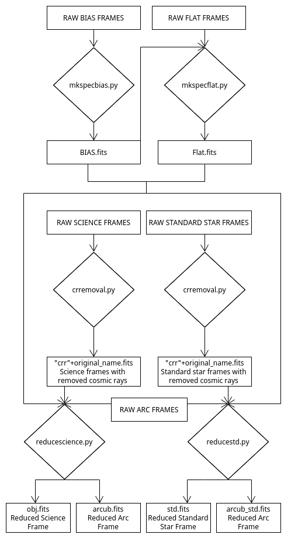

Pre-processing¶
Bias¶
The mkspecbias.py is to be called from the rawbias directory. In the directory, a list of all paths to the bias frames needs to be provided, and it should be called specbias.list . Inside the mkspecbias.py script, the ysize anx xsize parameters need to be set manually.
Before excecuting, the contents of the rawbias directory should look like this:
├── mkspecbias.py
└── specbias.list
Now, while in the rawbias directory, excecute:
python3 mkspecbias.py
This should produce a master bias frame, and the result will be saved in the rawbias directory.
├── BIAS.fits
├── mkspecbias.py
└── specbias.list
Flats¶
The mkspecflat.py is to be called from the rawflats directory. In the directory, a list of all paths to the flat frames needs to be provided, and it should be called specflat.list . Inside the mkspecflat.py script, the ysize anx xsize parameters need to be set manually. The script also uses the previously produced master bias frame (do not move it from the rawbias directory).
Before excecuting, the contents of the rawflats directory should look like this:
├── mkspecflat.py
└── specflat.list
Now, while in the rawflats directory, excecute:
python3 mkspecflat.py
This should produce a master flat frame, and the result will be saved in the rawflats directory.
├── Flat.fits
├── mkspecflat.py
└── specflat.list
Cosmic ray removal and 1d-extraction¶
The pre-processing of the science and standard star frames is done almost identically for both, and will therefore be described together. This procedure also reduces the arc-lamp frames, which are used for wavelength calibration.
This is to be done after the bias and flat frames have been produced.
Two directories are used for this step, rawscience and rawstd. In both directories, a list of all paths to the science/standard star frames needs to be provided, and it should be called raw_science.list and raw_std.list respectively. Also, in both directories, a list of all paths to the arc frames needs to be provided. This is the same for both directories, and it should be called raw_arcs.list . The crremoval.py script is used to remove cosmic rays from the frames, and the reducescience.py and reducestd.py scripts are used to extract the 1d-spectra. The reducescience.py and reducestd.py rely on the reduceobs.py script, which is used to placed in the parenting directory. The whole structure should look like this:
├── rawscience
│ ├── crremoval.py
│ ├── raw_arcs.list
│ ├── raw_science.list
│ └── reducescience.py
├── rawstd
│ ├── crremoval.py
│ ├── raw_arcs.list
│ ├── raw_std.list
│ └── reducestd.py
├── reduceobs.py
In the crremoval.py scripts, you will need to set the gain and ron (RDNOISE) parameters - these can be aquired from the header of the frames. Several paramters can also be set for guiding the astroscrappy.detect_cosmics method.
In the reducescience.py and reducestd.py scripts, you will need to set the ysize and xsize parameters, and also provide a list of the x-coordinate centers of the objects. If there are several frames, make sure the centers are provided to match the frames in alphabetical order. In order to find the centers, open the observations with your preferred .fits image viewer, and read of the x-coordinates of the object centers manually.
Now, while in the rawscience directory, excecute:
python3 crremoval.py
, and then:
python3 reducescience.py
Similary, while in the rawstd directory, excecute:
python3 crremoval.py
, and then:
python3 reducestd.py
Several files should be produced:
├── arcsub.fits
├── arcsub_std.fits
├── obj.fits
├── rawscience
│ ├── crrALDh120177.fits
│ ├── crrALDh120178.fits
│ ├── crremoval.py
│ ├── raw_arcs.list
│ ├── raw_science.list
│ ├── reducescience.py
│ ├── sub1.fits
│ └── sub2.fits
├── rawstd
│ ├── crrALDh120217.fits
│ ├── crremoval.py
│ ├── raw_arcs.list
│ ├── raw_std.list
│ ├── reducestd.py
│ └── sub1.fits
├── reduceobs.py
└── std.fits
Note
You might see a directory __pycache__ being created in the different directories at this point and in further steps. Simply ignore these.
The files starting with crr and sub are in-between products and have no importance for further processing. The arcsub.fits and arcsub_std.fits are reduced arc-lamp frames, and the obj.fits and std.fits are the extracted 1d-spectra of the science and standard star frames respectively. These 4 are the files that will be used for further processing.
Overview of the pre-processing steps¶
We provide a schematic overview of the pre-processing steps. Users are not expected to study or understand this, but it is provided for those who are interested or might consider developing the software.
{kind=link}